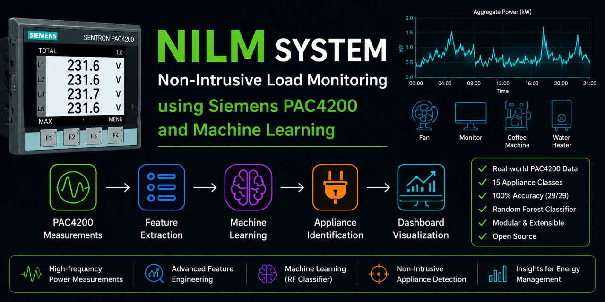

01
Non-Intrusive Load Monitoring
Siemens SENTRON PAC4200 + Machine Learning
Developed a Non-Intrusive Load Monitoring system capable of identifying individual electrical appliances from aggregate measurements obtained from a Siemens SENTRON PAC4200 power meter.
Key Highlights
- Real-world electrical data acquisition using Siemens SENTRON PAC4200
- Feature engineering from active/reactive power, current distortion, power factor and transient behaviour
- Random Forest classifier for appliance identification
- Real single-appliance recordings used for verification
- Complete measurement, feature extraction, classification and visualization pipeline
Python
Siemens PAC4200
Machine Learning
Random Forest
Signal Processing
Industrial IoT
View Project on GitHub →